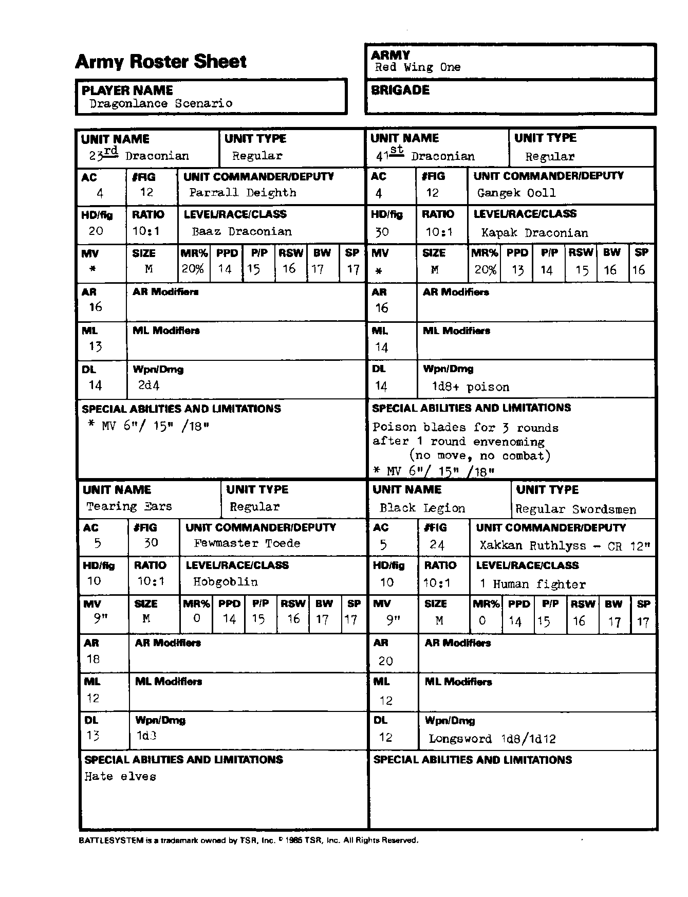

第一红翼 Red Wing One：军队部队
能力值顺序：力量／智力／感知／敏捷／体质／魅力。五项豁免依次为麻痹·毒素·死亡魔法／石化·变形／法杖·法棒·魔杖／吐息／法术。移动与指挥半径以桌面英寸计；“—”表示原卡空白或不适用。武器两种伤害分别针对 S/M 与 L 目标；特殊多次攻击另行注明。
第二十三龙人团 23rd Draconian
| 项目 | 数值 |
|---|---|
| 部队类型 | 正规 |
| 护甲等级 AC | 4 |
| 模型数 FIG | 12 |
| 指挥官／副官 | Parrall Deigth |
| 每模型生命骰 HD/fig | 20 |
| 生物／模型比例 | 10:1 |
| 等级／种族／职业 | 巴兹龙人 |
| 移动率 MV | 6／15／18 |
| 体型 | M |
| 魔法抗性 MR | 20% |
| 五项豁免 | 14/15/16/17/17 |
| 攻击等级 AR | 16 |
| AR 修正 | — |
| 士气等级 ML | 13 |
| ML 修正 | — |
| 纪律等级 DL | 14 |
| 武器／伤害 | 2d4 |
| 特殊能力与限制 | — |
第四十一龙人团 41st Draconian
| 项目 | 数值 |
|---|---|
| 部队类型 | 正规 |
| 护甲等级 AC | 4 |
| 模型数 FIG | 12 |
| 指挥官／副官 | Gangek Ooll |
| 每模型生命骰 HD/fig | 30 |
| 生物／模型比例 | 10:1 |
| 等级／种族／职业 | 卡帕克龙人 |
| 移动率 MV | 6／15／18 |
| 体型 | M |
| 魔法抗性 MR | 20% |
| 五项豁免 | 13/14/15/16/16 |
| 攻击等级 AR | 16 |
| AR 修正 | — |
| 士气等级 ML | 14 |
| ML 修正 | — |
| 纪律等级 DL | 14 |
| 武器／伤害 | 1d8 加毒素 |
| 特殊能力与限制 | 花 1 轮给刀刃涂毒，期间不得移动或战斗；毒刃维持 3 轮。 |
撕耳 Tearing Ears
| 项目 | 数值 |
|---|---|
| 部队类型 | 正规 |
| 护甲等级 AC | 5 |
| 模型数 FIG | 30 |
| 指挥官／副官 | Fewmaster Toede |
| 每模型生命骰 HD/fig | 10 |
| 生物／模型比例 | 10:1 |
| 等级／种族／职业 | 大地精 |
| 移动率 MV | 9 |
| 体型 | M |
| 魔法抗性 MR | 0% |
| 五项豁免 | 14/15/16/17/17 |
| 攻击等级 AR | 18 |
| AR 修正 | — |
| 士气等级 ML | 12 |
| ML 修正 | — |
| 纪律等级 DL | 13 |
| 武器／伤害 | 1d3 |
| 特殊能力与限制 | 仇恨精灵。 |
黑色军团 Black Legion
| 项目 | 数值 |
|---|---|
| 部队类型 | 正规：剑士 |
| 护甲等级 AC | 5 |
| 模型数 FIG | 24 |
| 指挥官／副官 | Xakkan Ruthlyss，CR 12 |
| 每模型生命骰 HD/fig | 10 |
| 生物／模型比例 | 10:1 |
| 等级／种族／职业 | 1 级人类战士 |
| 移动率 MV | 9 |
| 体型 | M |
| 魔法抗性 MR | 0% |
| 五项豁免 | 14/15/16/17/17 |
| 攻击等级 AR | 20 |
| AR 修正 | — |
| 士气等级 ML | 12 |
| ML 修正 | — |
| 纪律等级 DL | 12 |
| 武器／伤害 | 长剑 1d8／1d12 |
| 特殊能力与限制 | — |
兵力卡原图
